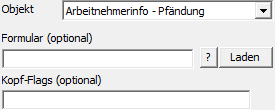
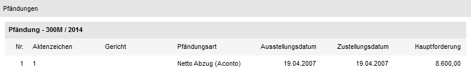

Externes Objekt - Typ "Objekt - Arbeitnehmerinfo - Pfändung"
Mit Hilfe des Objekts "Arbeitnehmerinfo - Pfändung" können die Pfändungen eines Arbeitnehmers ausgegeben werden. Welche Informationen dabei genau angedruckt werden sollen, wird über ein extra Formular gesteuert. Als Key dient der "AN-Key" (d.h. Feld "Text" oder Bereich "View / Var" muss gefüllt sein).
Hinweis
Es handelt sich bei diesem Objekt um eine Information aus der Arbeitnehmerinformation. Für die Darstellung werden die benutzerspezifischen Einstellungen der Arbeitnehmerinformation genutzt.

Ø Formular (optional)
An dieser Stelle kann das Formular für den Andruck der Informationen hinterlegt. Da dieses Objekt für LOHN A und LOHN D genutzt werden kann, hängt das Standardformular von dem Mandanten ab, in welchem das Formular verwendet wird:
ü LOHN A - P11WANPFA
ü LOHN D - P11WANPFD
Mit Hilfe des Icons  kann die Formularliste geöffnet werden,
um nach einem Formular zu suchen. Zusätzlich besteht die Möglichkeit das
ausgewählte Formular mit Hilfe des Buttons
kann die Formularliste geöffnet werden,
um nach einem Formular zu suchen. Zusätzlich besteht die Möglichkeit das
ausgewählte Formular mit Hilfe des Buttons  direkt zu öffnen.
direkt zu öffnen.
Ø Kopf-Flags (optional)
Bei diesem Objekt werden keine Kopf-Flags unterstützt.
Beispiel - Externes Objekt mit dem Typ "Objekt" - Objekt "Arbeitnehmerinfo - Pfändung"
